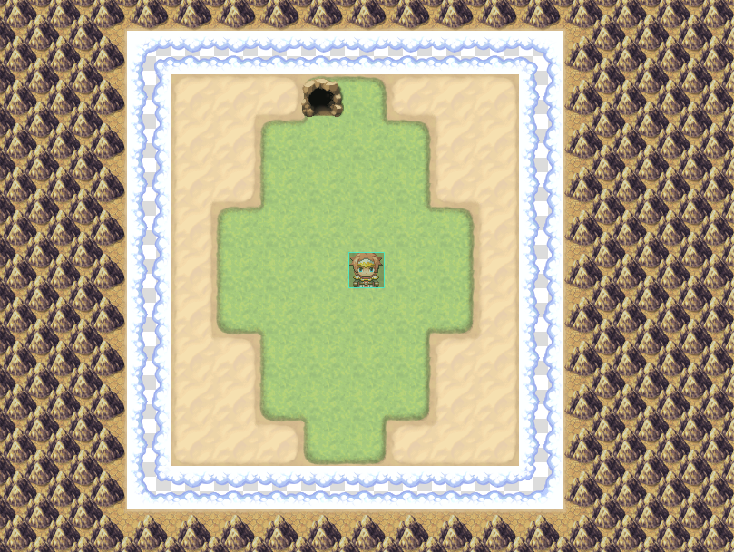
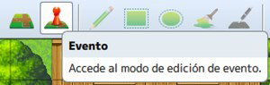
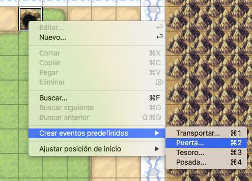
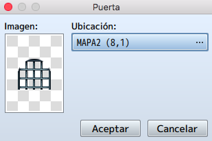
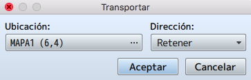
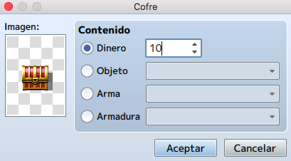
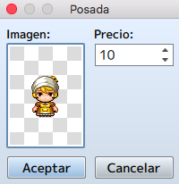

En este tema estudiaremos el concepto de evento en los videojuegos y los disparadores de los mismos, también
su importancia en nuestros proyectos y los beneficios de su implementación.
Además veremos como utilizar la herramienta evento de RPG Maker y como generar los diferentes eventos de los
que disponemos y acoplarlos a nuestros mapas.
Aprenderemos a como crear desde sencillos eventos rápidos predefinidos, hasta eventos hechos a la medida de
nuestras necesidades con el fin de darle vida a nuestros mundos virtuales.
• Conocer los conceptos de eventos y desencadenantes.
• Conocer la herramienta evento de RPG Maker.
• Conocer los diferentes modos de eventos rápidos que nos proporciona RPG Maker.
• Aprender a crear un evento rápido e implementarlo en nuestro proyecto.
• Conocer la creación de un evento personalizado y su respectiva configuración.
• Aprender a desplegar un evento personalizado con la creación de enemigos y NPCs
amistosos.
• Implementar todo lo aprendido a nuestro proyecto principal.
Un evento es un objeto que ocupa un solo cuadrado en un mapa RMMV y realiza el procesamiento de casi todas
las funciones esenciales del juego. Es algo que ocurre en condiciones determinadas. En definitiva, acciones
que van a suceder en el mapa.
Por ejemplo, podemos crear una tienda dirigida por un caballo o una puerta que requiera una llave. Todos
los personajes no jugadores (NPC) son eventos.
Crear un Evento es una tarea sencilla e intuitiva, aunque llevará tiempo según el nivel de detalle que
quieras darle a cada mapa.
A este respecto, hay tantas posibilidades que vamos a centrarnos en los eventos rápidos de mapa.
Lo primero que haremos en nuestro mapa, será colocar una entrada a una gruta en la parte de arriba que será
la salida de este mapa.

Una vez hayamos colocado la salida del mapa, lo primero que haremos será seleccionar el modo evento:

Tras esto, daremos click derecho sobre la entrada a la gruta.
Aparecerá el menú secundario, donde seleccionaremos Creación rápida de evento y después
en Puerta (servirá para colocar una puerta en la entrada a la gruta).
Una recomendación: cuando vayamos a ponerle la puerta a un edificio, es recomendable poner debajo, en lugar de pared, un cuadro negro como abertura de la puerta. Así, la transición del evento se verá más natural. De otro modo, la puerta se abriría y se vería la pared exterior de fondo.

En la ventana que aparecerá, se podrá definir el gráfico de la puerta (haciendo doble click donde la imagen)
y la posición a la que irá el PJ (podremos cambiar de mapa). Es un evento rápido muy fácil de crear.
Para ver su funcionamiento, crearemos un nuevo mapa solo de cesped como ya sabemos. En la puerta, pondremos
que nos lleve a cualquier posición de este segundo mapa.

Probaremos nuestro juego.
Los otros tres eventos rápidos también son sencillos:
Transportar: Acciona el teletransporte de un mapa a otro, o de una zona a otra (del mismo
mapa). Las coordenadas se ajustan en ubicación y el menú dirección ajusta el sprite del personaje (cómo
quedaría en pantalla, mirando hacia arriba, abajo, derecha o izquierda).

Tesoro: Coloca un cofre en el tile seleccionado, posibilitando que se obtenga oro (dinero), objetos, armas o armaduras. El gráfico del contenedor se puede cambiar en imagen (haciendo doble click, como hemos visto en otros sitios), y en contenido se elegirá lo que guarde.

Posada: Establece el posadero en las coordenadas seleccionadas, el cual cura al jugador y a su grupo (si corresponde) por un costo predefinido en monedas. Tanto el importe como la imagen será lo que podamos definir en primera instancia.

Nota: los eventos rápidos se puede editar para cambiar la configuración como cualquier otro evento.